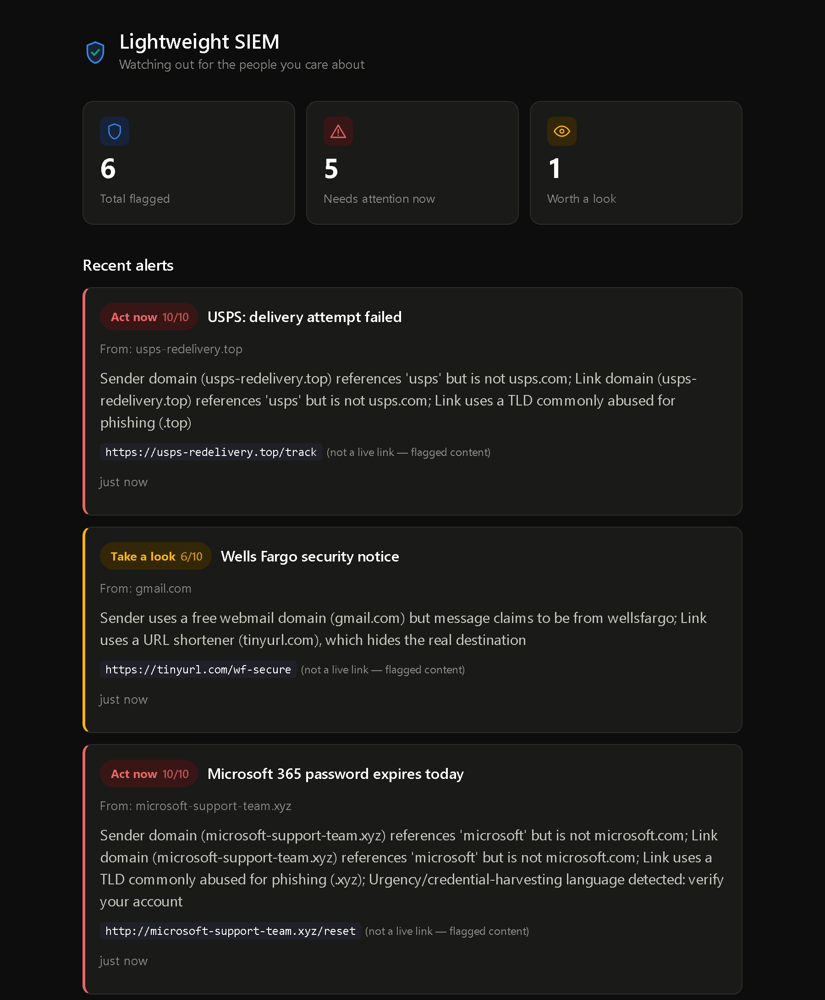
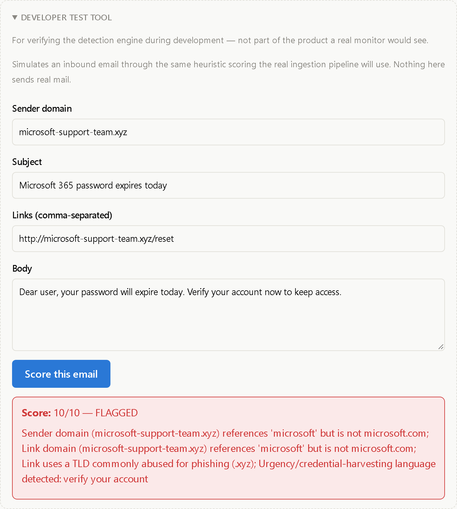

Projects / Lightweight SIEM
Lightweight SIEM
Phishing and scam protection for the people in your family who are most likely to be targeted.
Working prototype · 2026
Overview
A subscription service for non-technical people — often parents and grandparents. It scans their email for phishing, scores every suspicious message from 1 to 10 with a plain-language explanation, and alerts a linked family member so they can step in before money or credentials are lost.
Screenshots



The problem
Enterprise SIEMs are built for security teams. The people who actually lose money to phishing are often retirees with no security team at all — and the relative who would help has no visibility until it is too late. This project is a deliberately small detection and alerting pipeline built around one relationship: one protected person, one or more family monitors.
How it works
A rule-based heuristic engine scores each message for brand impersonation, look-alike and punycode domains, IP-literal links, URL shorteners, abused TLDs, free-webmail senders claiming to be a bank, and urgency or credential-harvesting language. Every score ships with a human-readable rationale, never a bare number.
Gmail connects through OAuth 2.0 with the narrowest scope that supports the design. Access and refresh tokens are encrypted at rest, state is protected by a CSRF cookie, and only message headers, sender and links feed the first-pass scoring.
The monitor dashboard is a React and TypeScript app. Everything that came from a phishing email is treated as attacker-controlled: it renders as plain text only, and flagged links are shown inert, never clickable.
Highlights
- Privacy-first design: data minimization, explicit consent from the protected person, and a defined path for what the monitor can and cannot see.
- Gmail OAuth flow with Fernet-encrypted tokens, automatic refresh, and manual-trigger ingestion into the same scoring engine.
- 40 automated tests, with every external service mocked.
- Dashboard built for a worried family member, not an analyst: plain-language severity labels and light and dark themes.
What's next
- Verify the Gmail connection against a live inbox and add background polling.
- Family linking and consent flow, then alert delivery by email, push and SMS.
- Browser extension for link checks at click time.
- Threat-intelligence lookups and AI-written risk narratives, sent only after a heuristic flag.